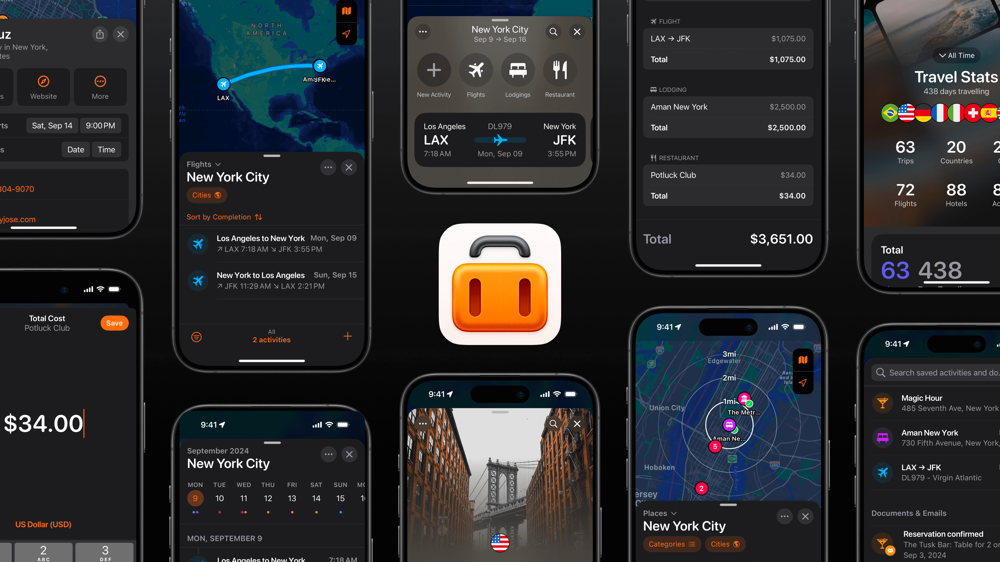

Rafael K. Streit
Building Tripsy
Bluesky, Threads, Mastodon, X or email.
Working
Founder & Developer
Tripsy
2018 — Current

You can download Tripsy for iOS and Mac.
You can download Tripsy for iOS and Mac.
Music
Electronic, Jazz & Bossa Nova
Setup & Tools
Desk + Hardware
- iPhone 16 Pro: 256GB. My everyday device.
- MacBook Pro M4 Max: nano-texture, 64GB RAM & 1TB. Loving it so far.
- Pro Display XDR: with nano-texture & pro stand. Beautiful.
- Herman Miller Embody: Love it. It's been with me since 2018.
Coding
- Xcode: Since I build iOS/Mac apps, my most used app.
- FiraCode: Love at first sigh with this font.
- Visual Studio Code: Python editor most of the time.
- Terminal (/bin/bash): Didn't migrate to zsh yet. 😅
Apps
- Tripsy: To plan and organize all my trips.
- 1Password (7): Manage all my passwords. While the version 7 is still live.
- Alfred: Spotlight replacement for macOS.
- CleanShot X: Such powerful app. Use it everyday to share+edit screenshots.
- Soulver 3: Notepad calculator for macOS.
- Tot: Notes app that syncs with my devices. Fast and simple. Super useful.
- Calcbot: Calculator for iOS & Mac by Tapbots.
Fitness
- Schwinn IC4: Indoor Cycling Bike.
- Scott Scale 970: Mountain Bike.
"A gente leva da vida a vida que a gente leva – Tom Jobim"
Built with plain HTML + CSS